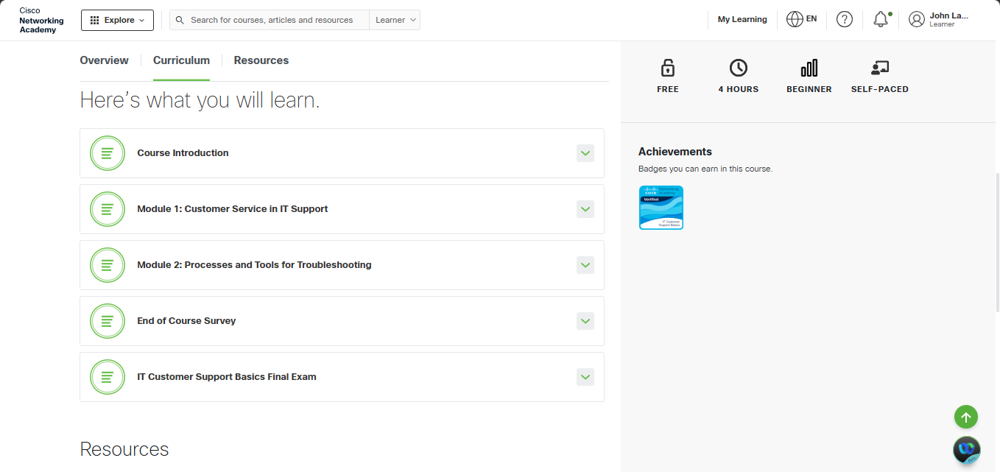
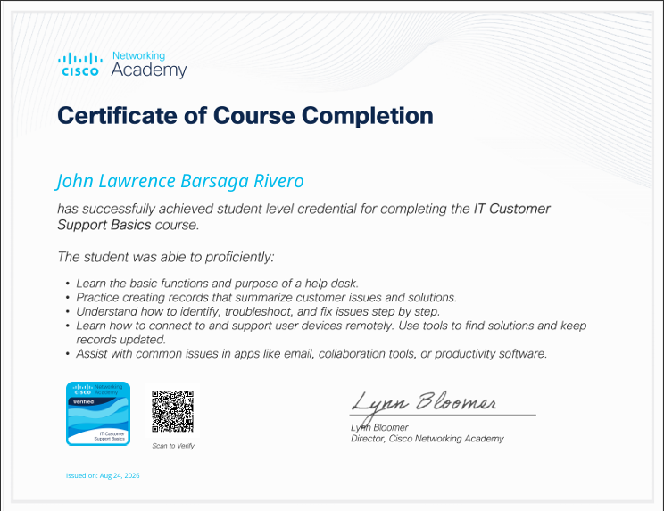

I completed the IT Customer Support Basics course from Cisco Networking Academy on August 24, 2026. The course helped me understand the basic responsibilities of IT customer support or help desk staff and how they assist users with different technical problems.
During the course, I learned about the basic functions and purpose of a help desk. I also learned how to properly create records that summarize customer issues and the solutions provided. This is important because keeping clear records can help IT support staff track problems and provide better assistance to users.
The course also taught me how to identify, troubleshoot, and fix common technical issues step by step. I learned that when solving a problem, it is important to understand the issue first before trying different solutions. I also learned how IT support staff can connect to and assist users remotely when needed.
Another useful part of the course was learning about common problems with applications such as email, collaboration tools, and productivity software. These are common tools used in schools and workplaces, so knowing how to assist users with them is an important skill for someone studying Information Technology.
Overall, completing the IT Customer Support Basics course was a helpful experience for me. It improved my understanding of troubleshooting, customer service, documentation, and remote support. The knowledge I gained can be useful in my IT studies and in the future when working in a technical support or help desk environment.


View PDF Verify My Badge